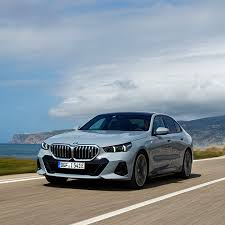

Mercedes-Benz German pronunciation commonly referred to simply as Mercedes and occasionally as Benz, is a German automotive brand that was founded in 1926. Mercedes-Benz AG (a subsidiary of the Mercedes-Benz Group, established in 2019) is based in Stuttgart, Baden-Württemberg, Germany.[1] Mercedes-Benz AG manufactures luxury vehicles and light commercial vehicles, all branded under the Mercedes-Benz name. From November 2019 onwards, the production of Mercedes-Benz-branded heavy commercial vehicles (trucks and buses) has been managed by Daimler Truck, which separated from the Mercedes-Benz Group to form an independent entity at the end of 2021.

The company's automobiles are marketed under the BMW, Mini and Rolls-Royce brands, and motorcycles are marketed under the BMW Motorrad brand. In 2023, BMW was the world's ninth-largest producer of motor vehicles, and the 6th largest by revenue,[3] with 2,555,341 vehicles produced in that year alone.[4] In 2023, the company was ranked 46th in the Forbes Global 2000.[5] The company has significant motor-sport history, especially in touring cars, sports cars, and the Isle of Man TT. BMW is headquartered in Munich and produces motor vehicles in Germany, the United Kingdom, the United States, Brazil, Mexico, South Africa, India, China, and previously also in the Netherlands (ceased in 2023).[6] The Quandt family [de] is a long-term shareholder of the company, following investments by the brothers Herbert and Harald Quandt in 1959 that saved BMW from bankruptcy, with the remaining shares owned by the public.
The origins of the company are complex, dating back to the early 20th century and the initial enterprises (Horch and the Audiwerke) founded by engineer August Horch. Two other manufacturers (DKW and Wanderer) also contributed to the foundation of Auto Union in 1932. The modern Audi era began in the 1960s, when Auto Union was acquired by Volkswagen from Daimler-Benz.[7] After relaunching the Audi brand with the 1965 introduction of the Audi F103 series, Volkswagen merged Auto Union with NSU Motorenwerke in 1969, thus creating the present-day form of the company. The company name is based on the Latin translation of the surname of the founder, August Horch. Horch, meaning 'listen', becomes audi in Latin. The four rings of the Audi logo each represent one of four car companies that banded together to create Audi's predecessor company, Auto Union. Audi's slogan is Vorsprung durch Technik, which is translated as 'Progress through Technology'.[8] Audi, along with German brands BMW and Mercedes-Benz, is among the best-selling luxury automobile brands in the world.[9]